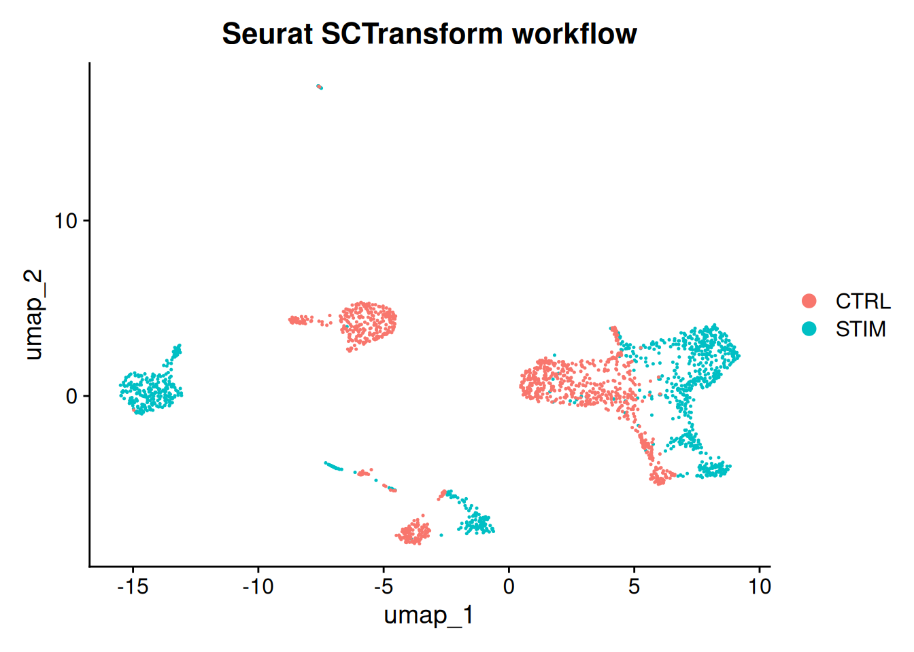
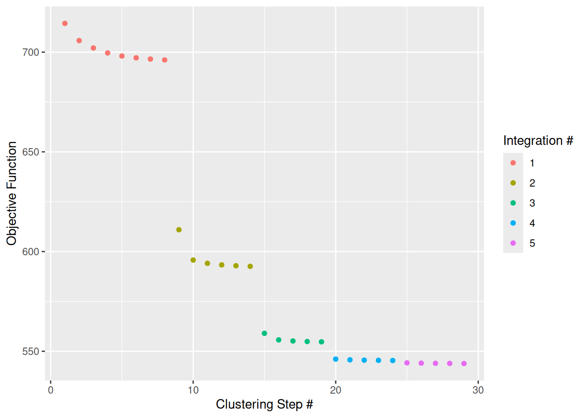
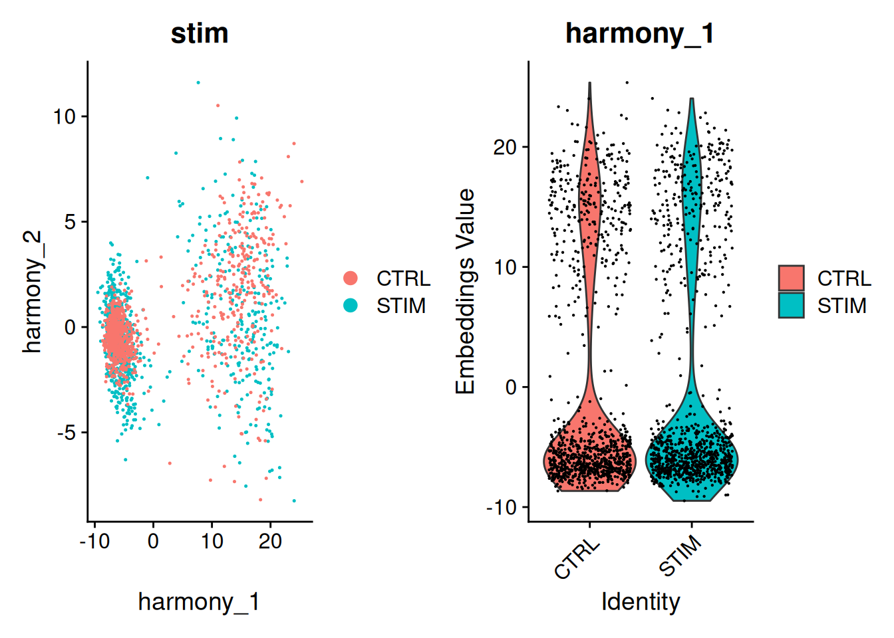
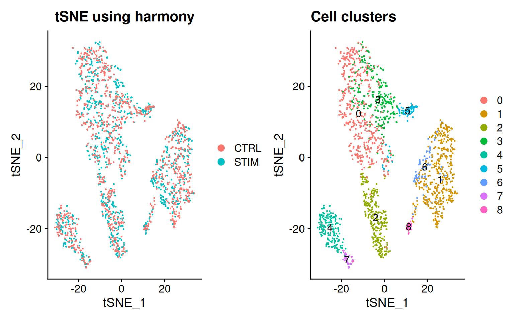
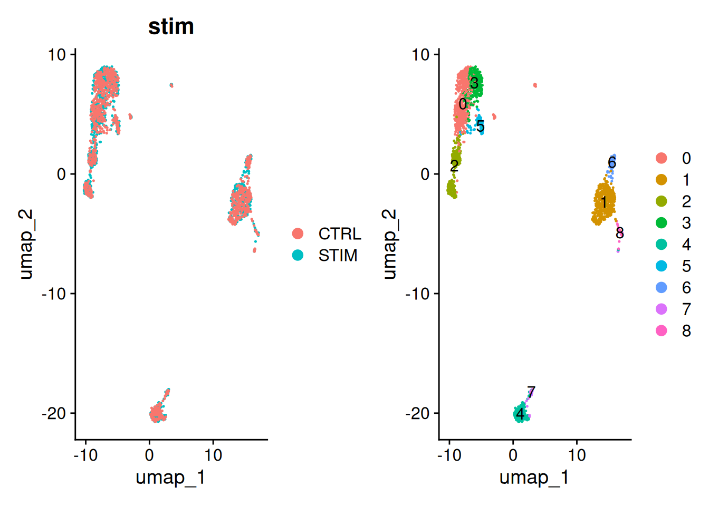
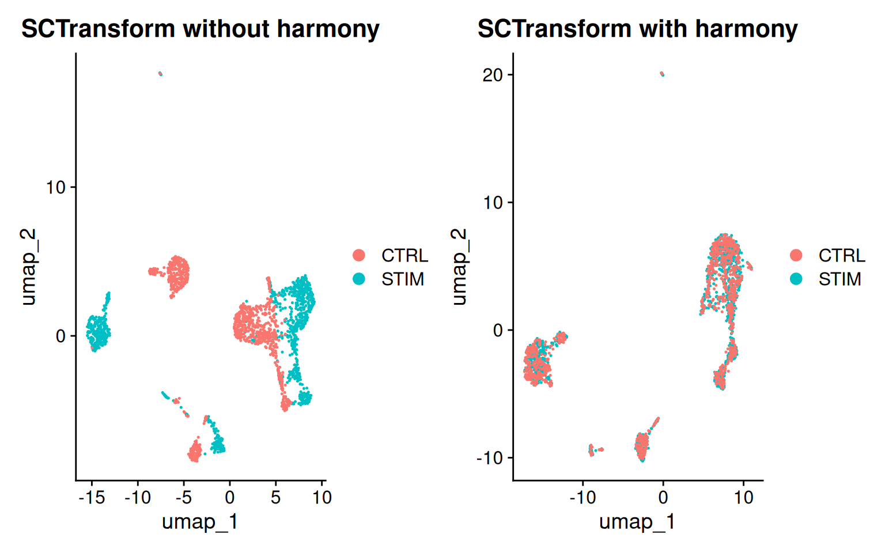
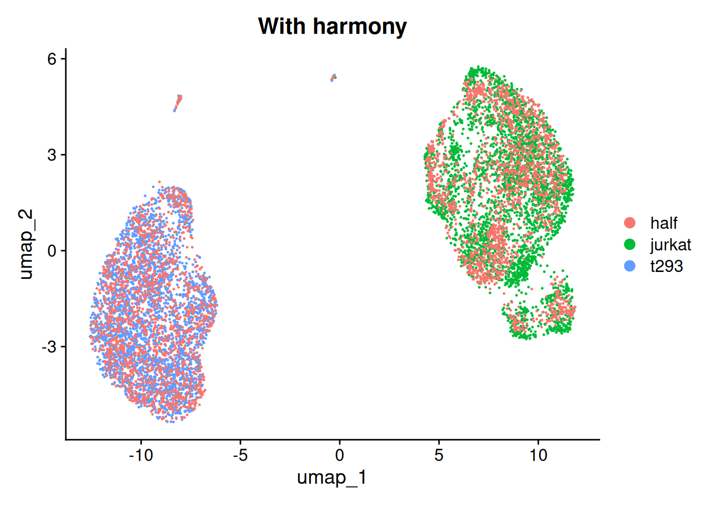
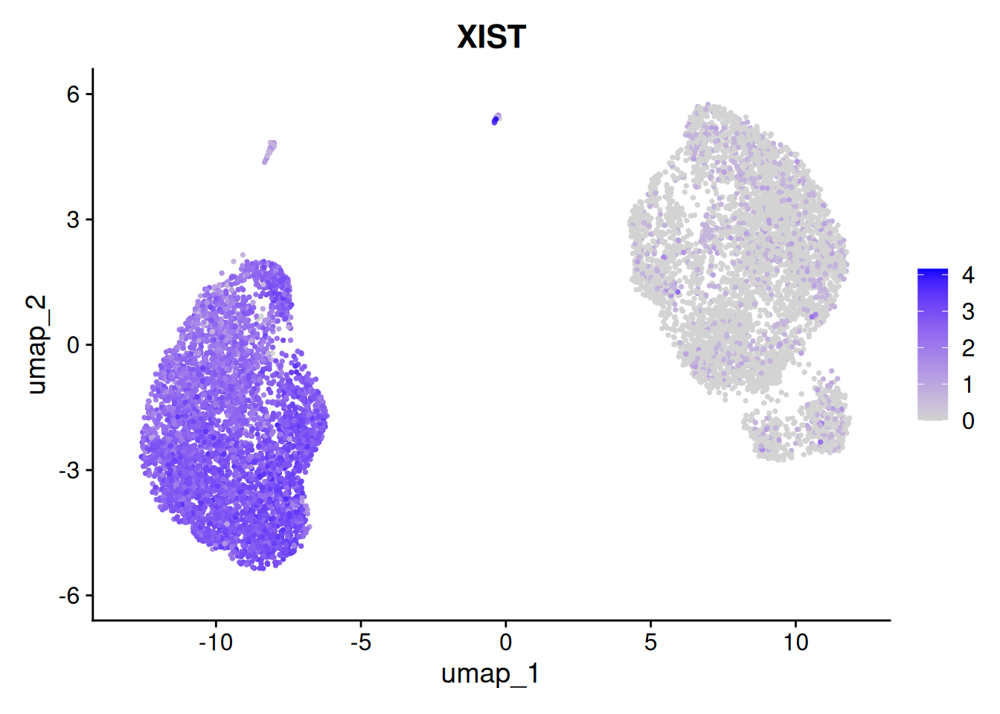

Getting started with harmony
2025-02-17
Last updated: 2025-02-17
Checks: 7 0
Knit directory: muse/
This reproducible R Markdown analysis was created with workflowr (version 1.7.1). The Checks tab describes the reproducibility checks that were applied when the results were created. The Past versions tab lists the development history.
Great! Since the R Markdown file has been committed to the Git repository, you know the exact version of the code that produced these results.
Great job! The global environment was empty. Objects defined in the global environment can affect the analysis in your R Markdown file in unknown ways. For reproduciblity it’s best to always run the code in an empty environment.
The command set.seed(20200712) was run prior to running
the code in the R Markdown file. Setting a seed ensures that any results
that rely on randomness, e.g. subsampling or permutations, are
reproducible.
Great job! Recording the operating system, R version, and package versions is critical for reproducibility.
Nice! There were no cached chunks for this analysis, so you can be confident that you successfully produced the results during this run.
Great job! Using relative paths to the files within your workflowr project makes it easier to run your code on other machines.
Great! You are using Git for version control. Tracking code development and connecting the code version to the results is critical for reproducibility.
The results in this page were generated with repository version abc7ef4. See the Past versions tab to see a history of the changes made to the R Markdown and HTML files.
Note that you need to be careful to ensure that all relevant files for
the analysis have been committed to Git prior to generating the results
(you can use wflow_publish or
wflow_git_commit). workflowr only checks the R Markdown
file, but you know if there are other scripts or data files that it
depends on. Below is the status of the Git repository when the results
were generated:
Ignored files:
Ignored: .Rproj.user/
Ignored: data/1M_neurons_filtered_gene_bc_matrices_h5.h5
Ignored: data/293t_3t3_filtered_gene_bc_matrices.tar.gz
Ignored: data/293t_filtered_gene_bc_matrices.tar.gz
Ignored: data/5k_Human_Donor1_PBMC_3p_gem-x_5k_Human_Donor1_PBMC_3p_gem-x_count_sample_filtered_feature_bc_matrix.h5
Ignored: data/5k_Human_Donor2_PBMC_3p_gem-x_5k_Human_Donor2_PBMC_3p_gem-x_count_sample_filtered_feature_bc_matrix.h5
Ignored: data/5k_Human_Donor3_PBMC_3p_gem-x_5k_Human_Donor3_PBMC_3p_gem-x_count_sample_filtered_feature_bc_matrix.h5
Ignored: data/5k_Human_Donor4_PBMC_3p_gem-x_5k_Human_Donor4_PBMC_3p_gem-x_count_sample_filtered_feature_bc_matrix.h5
Ignored: data/Parent_SC3v3_Human_Glioblastoma_filtered_feature_bc_matrix.tar.gz
Ignored: data/brain_counts/
Ignored: data/cl.obo
Ignored: data/cl.owl
Ignored: data/jurkat:293t_50:50_filtered_gene_bc_matrices.tar.gz
Ignored: data/jurkat_filtered_gene_bc_matrices.tar.gz
Ignored: data/pbmc4k_filtered_gene_bc_matrices.tar.gz
Ignored: data/refdata-gex-GRCh38-2020-A.tar.gz
Ignored: data/seurat_1m_neuron.rds
Ignored: data/t_3k_filtered_gene_bc_matrices.tar.gz
Ignored: r_packages_4.4.1/
Untracked files:
Untracked: data/293t/
Untracked: data/jurkat/
Untracked: data/jurkat_293t/
Note that any generated files, e.g. HTML, png, CSS, etc., are not included in this status report because it is ok for generated content to have uncommitted changes.
These are the previous versions of the repository in which changes were
made to the R Markdown (analysis/harmony.Rmd) and HTML
(docs/harmony.html) files. If you’ve configured a remote
Git repository (see ?wflow_git_remote), click on the
hyperlinks in the table below to view the files as they were in that
past version.
| File | Version | Author | Date | Message |
|---|---|---|---|---|
| Rmd | abc7ef4 | Dave Tang | 2025-02-17 | Increase memory for future |
| html | 4db2bdf | Dave Tang | 2024-04-15 | Build site. |
| Rmd | 9a4bcb8 | Dave Tang | 2024-04-15 | Using 10x filtered matrices |
| html | a940a7e | Dave Tang | 2024-04-15 | Build site. |
| Rmd | 03f3f3b | Dave Tang | 2024-04-15 | Quieter |
| html | b174605 | Dave Tang | 2024-04-15 | Build site. |
| Rmd | 6c16dce | Dave Tang | 2024-04-15 | Seurat SCTransform workflow with harmony |
| html | 5466912 | Dave Tang | 2024-04-15 | Build site. |
| Rmd | 3ec3367 | Dave Tang | 2024-04-15 | Seurat SCTransform workflow |
| html | c3d7314 | Dave Tang | 2024-04-15 | Build site. |
| Rmd | 708f1ab | Dave Tang | 2024-04-15 | Using harmony with Seurat |
| html | 085be81 | Dave Tang | 2024-04-14 | Build site. |
| Rmd | 95fa6fd | Dave Tang | 2024-04-14 | Create some plots |
| html | 9abb7b6 | Dave Tang | 2024-04-14 | Build site. |
| Rmd | 72ffea9 | Dave Tang | 2024-04-14 | Getting started with harmony |
Quickstart
Follow the quickstart tutorial
install.packages("harmony"){harmony} version.
packageVersion("harmony")[1] '1.2.1'Data
We library normalized the cells, log transformed the counts, and scaled the genes. Then we performed PCA and kept the top 20 PCs. The PCA embeddings and meta data are available as part of this package.
data(cell_lines)
V <- cell_lines$scaled_pcs
meta_data <- cell_lines$meta_data
str(cell_lines)List of 2
$ meta_data : tibble [2,370 × 5] (S3: tbl_df/tbl/data.frame)
..$ cell_id : chr [1:2370] "half_GTACGAACCACCAA" "t293_AGGTCATGCACTTT" "half_ATAGTTGACTTCTA" "half_GAGCGGCTTGCTTT" ...
..$ dataset : chr [1:2370] "half" "t293" "half" "half" ...
..$ nGene : int [1:2370] 1508 4009 3545 2450 2388 3762 3792 4089 3374 3023 ...
..$ percent_mito: num [1:2370] 0.0148 0.0232 0.0153 0.017 0.0601 ...
..$ cell_type : chr [1:2370] "jurkat" "t293" "jurkat" "jurkat" ...
..- attr(*, ".internal.selfref")=<externalptr>
$ scaled_pcs:Classes 'data.table' and 'data.frame': 2370 obs. of 20 variables:
..$ X1 : num [1:2370] 0.00281 -0.01167 0.00933 0.00634 0.00855 ...
..$ X2 : num [1:2370] -0.00145 0.000877 -0.006972 -0.002518 0.007087 ...
..$ X3 : num [1:2370] -0.00639 0.000897 -0.002599 -0.00439 -0.002254 ...
..$ X4 : num [1:2370] 0.000282 0.001324 0.001882 0.000274 0.001679 ...
..$ X5 : num [1:2370] 0.00144 -0.00329 -0.0038 -0.0025 0.00455 ...
..$ X6 : num [1:2370] 0.000752 0.001303 -0.000347 0.000435 0.0003 ...
..$ X7 : num [1:2370] -0.00283 -0.00198 -0.00157 0.00136 -0.0016 ...
..$ X8 : num [1:2370] -0.000653 0.001625 -0.003272 -0.00263 -0.000263 ...
..$ X9 : num [1:2370] 0.001411 -0.000913 -0.001031 -0.001876 0.001389 ...
..$ X10: num [1:2370] -0.000417 -0.000175 -0.001623 -0.000425 0.000391 ...
..$ X11: num [1:2370] 0.001652 -0.000034 0.001241 -0.000458 -0.001444 ...
..$ X12: num [1:2370] 6.71e-05 3.76e-04 -7.61e-04 -6.52e-04 -2.44e-03 ...
..$ X13: num [1:2370] 0.000542 0.000219 -0.001502 -0.002067 -0.000907 ...
..$ X14: num [1:2370] 0.001223 0.001688 -0.000279 -0.000927 -0.000135 ...
..$ X15: num [1:2370] 0.002081 0.000386 -0.001141 0.001114 0.001015 ...
..$ X16: num [1:2370] 1.87e-03 -1.50e-03 5.99e-04 -1.98e-05 -1.25e-03 ...
..$ X17: num [1:2370] 0.000429 0.000259 0.001224 -0.001069 -0.001165 ...
..$ X18: num [1:2370] 0.00115 -0.00106 0.00145 0.00028 0.00111 ...
..$ X19: num [1:2370] -1.09e-03 4.11e-04 7.41e-05 9.33e-04 -1.76e-04 ...
..$ X20: num [1:2370] 0.000265 -0.00171 -0.000662 0.000365 0.000477 ...
..- attr(*, ".internal.selfref")=<externalptr> Table of cell types.
table(cell_lines$meta_data$cell_type)
jurkat t293
1266 1104 Table of datasets.
table(cell_lines$meta_data$dataset)
half jurkat t293
846 824 700 Analysis
Initially, the cells cluster by both dataset (left) and cell type
(right). The quickstart guide uses the do_scatter()
function, which is missing.
We can simply plot the first two PCs using {ggplot2}.
Plot PC1 versus PC2.
my_df <- data.frame(PC1 = V$X1, PC2 = V$X2, dataset = meta_data$dataset, cell_type = meta_data$cell_type)
ggplot(my_df, aes(PC1, PC2, colour = dataset)) +
geom_point() +
theme_minimal() +
ggtitle("Before harmony") -> p1
ggplot(my_df, aes(PC1, PC2, colour = cell_type)) +
geom_point() +
theme_minimal() -> p2
p1 + p2
| Version | Author | Date |
|---|---|---|
| 085be81 | Dave Tang | 2024-04-14 |
Let’s run Harmony to remove the influence of dataset-of-origin from the cell embeddings.
harmony_embeddings <- harmony::RunHarmony(
V, meta_data, 'dataset', verbose=FALSE
)
my_df2 <- data.frame(PC1 = harmony_embeddings[, 1], PC2 = harmony_embeddings[, 2], dataset = meta_data$dataset, cell_type = meta_data$cell_type)
ggplot(my_df2, aes(PC1, PC2, colour = dataset)) +
geom_point() +
theme_minimal() +
ggtitle("After harmony") -> p1
ggplot(my_df2, aes(PC1, PC2, colour = cell_type)) +
geom_point() +
theme_minimal() -> p2
p1 + p2
| Version | Author | Date |
|---|---|---|
| c3d7314 | Dave Tang | 2024-04-15 |
Using harmony with Seurat
Following the Using harmony with Seurat tutorial, which describes how to use harmony in Seurat v5 single-cell analysis workflows. Also, it will provide some basic downstream analyses demonstrating the properties of harmonised cell embeddings and a brief explanation of the exposed algorithm parameters.
Data
For this demo, we will be aligning two groups of PBMCs Kang et al., 2017:
- Control PBMCs
- Stimulated PBMCs treated with interferon beta.
data("pbmc_stim")
str(pbmc.ctrl)Formal class 'dgCMatrix' [package "Matrix"] with 6 slots
..@ i : int [1:558407] 1 3 8 19 33 40 51 53 89 100 ...
..@ p : int [1:1001] 0 812 1248 1692 2463 2810 3314 4127 4660 5229 ...
..@ Dim : int [1:2] 9015 1000
..@ Dimnames:List of 2
.. ..$ : chr [1:9015] "LINC00115" "NOC2L" "HES4" "ISG15" ...
.. ..$ : chr [1:1000] "TCGCAAGAGCGATT-1" "GCAAACTGAACTGC-1" "TGATAAACTGGTAC-1" "GTTAAATGACTGTG-1" ...
..@ x : num [1:558407] 1 1 1 1 1 2 1 3 1 2 ...
..@ factors : list()str(pbmc.stim)Formal class 'dgCMatrix' [package "Matrix"] with 6 slots
..@ i : int [1:571399] 3 33 53 118 128 138 144 154 171 208 ...
..@ p : int [1:1001] 0 425 505 852 1403 2010 2325 2859 3435 3955 ...
..@ Dim : int [1:2] 9015 1000
..@ Dimnames:List of 2
.. ..$ : chr [1:9015] "LINC00115" "NOC2L" "HES4" "ISG15" ...
.. ..$ : chr [1:1000] "ATCACTTGCTCGAA-1" "CCGGAGACTGTGAC-1" "CAAGCCCTGTTAGC-1" "GAGGTACTAACGGG-1" ...
..@ x : num [1:571399] 1 2 3 1 8 1 1 1 3 1 ...
..@ factors : list()The full dataset used for this vignette have been upload to Zenodo but currently does not work with newer versions of R.
Create Seurat object
Create a Seurat object with treatment conditions in the metadata.
pbmc <- CreateSeuratObject(
counts = cbind(pbmc.stim, pbmc.ctrl),
project = "Kang",
min.cells = 5
)
pbmc@meta.data$stim <- c(rep("STIM", ncol(pbmc.stim)), rep("CTRL", ncol(pbmc.ctrl)))
pbmcAn object of class Seurat
9015 features across 2000 samples within 1 assay
Active assay: RNA (9015 features, 0 variable features)
1 layer present: countsSeurat SCTransform workflow
pbmc_sct <- SCTransform(pbmc) |>
RunPCA() |>
FindNeighbors() |>
RunUMAP(dims = 1:20) |>
FindClusters()Modularity Optimizer version 1.3.0 by Ludo Waltman and Nees Jan van Eck
Number of nodes: 2000
Number of edges: 64411
Running Louvain algorithm...
Maximum modularity in 10 random starts: 0.8846
Number of communities: 15
Elapsed time: 0 secondsDimPlot(pbmc_sct, reduction = "umap", group.by = "stim", pt.size = .1) + ggtitle("Seurat SCTransform workflow")
| Version | Author | Date |
|---|---|---|
| 5466912 | Dave Tang | 2024-04-15 |
Seurat workflow with harmony
Harmony works on an existing matrix with cell embeddings and outputs
its transformed version with the datasets aligned according to some
user-defined experimental conditions. By default, harmony will look up
the pca cell embeddings and use these to run harmony.
Therefore, it assumes that the Seurat object has these embeddings
already precomputed.
We will run the Seurat workflow to generate the embeddings.
Here, using Seurat::NormalizeData(), we will be
generating a union of highly variable genes using each condition (the
control and stimulated cells). These features are going to be
subsequently used to generate the 20 PCs with
Seurat::RunPCA().
Note that the defaults for NormalizeData are:
normalization.method= “LogNormalize”scale.factor= 10000
pbmc <- NormalizeData(pbmc, verbose = FALSE)
pbmc <- FindVariableFeatures(object = pbmc, selection.method = "vst", nfeatures = 2000)Finding variable features for layer countscell_by_cond <- split(row.names(pbmc@meta.data), pbmc@meta.data$stim)
vfeatures <- lapply(cell_by_cond, function(cells){
FindVariableFeatures(object = pbmc[, cells], selection.method = "vst", nfeatures = 2000) |>
VariableFeatures()
})Finding variable features for layer counts
Finding variable features for layer countsVariableFeatures(pbmc) <- unique(unlist(vfeatures))
length(VariableFeatures(pbmc))[1] 3237Scale and perform PCA.
pbmc <- ScaleData(pbmc, verbose = FALSE) |>
RunPCA(features = VariableFeatures(pbmc), npcs = 20, verbose = FALSE)RunHarmony() is a generic function designed to interact
with Seurat objects. To run harmony on a Seurat object after it has been
normalised, only one argument needs to be specified which contains the
batch covariate located in the metadata. For this vignette, further
parameters are specified to align the dataset but the minimum parameters
are shown in the snippet below and is not run.
pbmc <- RunHarmony(pbmc, "stim")Here, we will be running harmony with some indicative parameters and
plotting the convergence plot to illustrate some of the under the hood
functionality. By setting plot_converge=TRUE, harmony will
generate a plot with its objective showing the flow of the integration.
Each point represents the cost measured after a clustering round.
Different colors represent different Harmony iterations which is
controlled by max_iter (assuming that
early_stop=FALSE). Here max_iter=10 and up to
10 correction steps are expected. However, early_stop=TRUE
so harmony will stop after the cost plateaus.
pbmc <- RunHarmony(pbmc, "stim", plot_convergence = TRUE, nclust = 50, max_iter = 10, early_stop = TRUE)Transposing data matrixInitializing state using k-means centroids initializationHarmony 1/10Harmony 2/10Harmony 3/10Harmony 4/10Harmony 5/10Harmony converged after 5 iterations
| Version | Author | Date |
|---|---|---|
| c3d7314 | Dave Tang | 2024-04-15 |
RunHarmony has several parameters accessible to users
which are outlined below.
object(required) - The Seurat object. This vignette assumes Seurat objects are version 5.group.by.vars(required) - A character vector that specifies all the experimental covariates to be corrected/harmonized by the algorithm.
When using RunHarmony() with Seurat, harmony will look
up the group.by.vars metadata fields in the Seurat Object
metadata. For example, given the pbmc[["stim"]] exists as
the stim condition, setting group.by.vars="stim" will
perform integration of these samples accordingly. If you want to
integrate on another variable, it needs to be present in Seurat object’s
meta.data. To correct for several covariates, specify them in a vector:
group.by.vars = c("stim", "new_covariate").
reduction.use- The cell embeddings to be used for the batch alignment. This parameter assumes that a reduced dimension already exists in the reduction slot of the Seurat object. By default, thepcareduction is used.dims.use- Optional parameter which can use a name vector to select specific dimensions to be harmonised.nclust- is a positive integer. Under the hood, harmony applies k-means soft-clustering. For this task,kneeds to be determined.nclustcorresponds tok. The harmonisation results and performance are not particularly sensitive for a reasonable range of this parameter value. If this parameter is not set, harmony will autodetermine this based on the dataset size with a maximum cap of 200. For dataset with a vast amount of different cell types and batches this pamameter may need to be determined manually.sigma- a positive scalar that controls the soft clustering probability assignment of single-cells to different clusters. Larger values will assign a larger probability to distant clusters of cells resulting in a different correction profile. Single-cells are assigned to clusters by their euclidean distance \(d\) to some cluster center \(Y\) after cosine normalisation which is defined in the range [0,4]. The clustering probability of each cell is calculated as \(e^{-\frac{d}{\sigma}}\) where \(\sigma\) is controlled by thesigmaparameter. Default value ofsigmais 0.1 and it generally works well since it defines probability assignment of a cell in the range \([e^{-40}, e^0]\). Larger values ofsigmarestrict the dynamic range of probabilities that can be assigned to cells. For example,sigma=1will yield a probabilities in the range of \([e^{-4}, e^0]\).theta-thetais a positive scalar vector that determines the coefficient of harmony’s diversity penalty for each corrected experimental covariate. In challenging experimental conditions, increasing theta may result in better integration results. Theta is an expontential parameter of the diversity penalty, thus settingtheta=0disables this penalty while increasing it to greater values than 1 will perform more aggressive corrections in an expontential manner. By default, it will settheta=2for each experimental covariate.max_iter- The number of correction steps harmony will perform before completing the data set integration. In general, more iterations than necessary increases computational runtime especially which becomes evident in bigger datasets. Settingearly_stop=TRUEmay reduce the actual number of correction steps which will be smaller thanmax_iter.early_stop- Under the hood, harmony minimizes its objective function through a series of clustering and integration tests. By settingearly_stop=TRUE, when the objective function is less than1e-4after a correction step harmony exits before reaching themax_itercorrection steps. This parameter can drastically reduce run-time in bigger datasets..options- A set of internal algorithm parameters that can be overriden. For advanced users only.
These parameters are Seurat-specific and do not affect the flow of the algorithm.
project_dim- Toggle-like parameter, by defaultproject_dim=TRUE. When enabled,RunHarmony()calculates genomic feature loadings using Seurat’sProjectDim()that correspond to the harmonized cell embeddings.reduction.save- The new Reduced Dimension slot identifier. By default,reduction.save=TRUE. This option allows several independent runs of harmony to be retained in the appropriate slots in the SeuratObjects. It is useful if you want to try Harmony with multiple parameters and save them as e.g. ‘harmony_theta0’, ‘harmony_theta1’, ‘harmony_theta2’.
Miscellaneous parameters
These parameters help users troubleshoot harmony.
plot_convergence- Option that plots the convergence plot after the execution of the algorithm. By defaultFALSE. Setting it toTRUEwill collect harmony’s objective value and plot it allowing the user to troubleshoot the flow of the algorithm and fine-tune the parameters of the dataset integration procedure.
Results
RunHarmony() returns the Seurat object which contains
the harmonised cell embeddings in a slot named harmony.
This entry can be accessed via pbmc@reductions$harmony. To
access the values of the cell embeddings we can also use
Embeddings.
harmony.embeddings <- Embeddings(pbmc, reduction = "harmony")
head(harmony.embeddings) harmony_1 harmony_2 harmony_3 harmony_4 harmony_5
ATCACTTGCTCGAA-1 -6.479702 0.008171644 -3.37515156 -4.099469 -0.008402849
CCGGAGACTGTGAC-1 -6.899788 -1.576543680 -6.21883818 -4.600855 5.431930567
CAAGCCCTGTTAGC-1 -6.778387 1.168303812 -6.51744885 9.119283 0.221378456
GAGGTACTAACGGG-1 -7.457892 0.230626098 0.04633372 -2.056185 2.202061677
CGCGGATGCCACAA-1 14.727748 -4.628065895 -4.46893682 -1.576657 1.511387377
ACATGGTGCCTAAG-1 -7.610653 0.169061161 -3.56685757 -2.899556 1.763453269
harmony_6 harmony_7 harmony_8 harmony_9 harmony_10
ATCACTTGCTCGAA-1 -0.50324290 0.7064309 1.3559831 0.6606093 0.896258741
CCGGAGACTGTGAC-1 2.62606436 -3.8302384 4.4752736 2.4579002 2.165149731
CAAGCCCTGTTAGC-1 0.02790648 -1.6405949 1.1675994 1.3743442 -0.161641981
GAGGTACTAACGGG-1 0.76979146 4.0367549 -0.9729053 2.6217274 -2.654879912
CGCGGATGCCACAA-1 0.50237890 -0.7808236 -1.7185065 -2.1407409 2.190081503
ACATGGTGCCTAAG-1 0.81828382 -0.1700942 0.6456826 -0.7853121 0.002772687
harmony_11 harmony_12 harmony_13 harmony_14 harmony_15
ATCACTTGCTCGAA-1 -0.4417489 1.4743115 -0.4759258 -0.212537776 0.2676670
CCGGAGACTGTGAC-1 2.7730307 3.3926242 0.7897797 4.203443728 4.3141192
CAAGCCCTGTTAGC-1 -0.6121661 1.3246926 0.3312554 -1.127996550 -0.5355179
GAGGTACTAACGGG-1 0.9421837 3.7047669 -0.3159213 -0.707279006 -1.3044352
CGCGGATGCCACAA-1 0.1525977 0.1711006 4.2970980 3.255725383 -0.7619538
ACATGGTGCCTAAG-1 0.3060353 2.1010580 -0.5419756 0.004886988 0.6353239
harmony_16 harmony_17 harmony_18 harmony_19 harmony_20
ATCACTTGCTCGAA-1 0.6435108 0.62385140 2.3402714 -0.3539086 0.1408163
CCGGAGACTGTGAC-1 3.4670592 9.67068155 -1.5557773 1.5395016 4.0110442
CAAGCCCTGTTAGC-1 3.9306648 -2.37229434 -0.4681119 1.1673524 0.0574584
GAGGTACTAACGGG-1 -2.4202051 -0.09903653 0.3197214 1.0333426 -3.4470187
CGCGGATGCCACAA-1 -1.0867898 0.55686789 3.0173422 4.8504994 1.5093119
ACATGGTGCCTAAG-1 -0.9257885 0.08646308 -0.6890350 -0.4465735 -0.3449852After Harmony integration, we should inspect the quality of the harmonisation and contrast it with the unharmonised algorithm input. Ideally, cells from different conditions will align along the Harmonized PCs. If they are not, you could increase the theta value above to force a more aggressive fit of the dataset and rerun the workflow.
p1 <- DimPlot(object = pbmc, reduction = "harmony", pt.size = .1, group.by = "stim")
p2 <- VlnPlot(object = pbmc, features = "harmony_1", group.by = "stim", pt.size = .1)
p1 + p2
| Version | Author | Date |
|---|---|---|
| c3d7314 | Dave Tang | 2024-04-15 |
Plot Genes correlated with the Harmonized PCs
DimHeatmap(object = pbmc, reduction = "harmony", cells = 500, dims = 1:3)
| Version | Author | Date |
|---|---|---|
| c3d7314 | Dave Tang | 2024-04-15 |
The harmonised cell embeddings generated by harmony can be used for
further integrated analyses. In this workflow, the Seurat object
contains the harmony reduction modality name in the method
that requires it.
Perform clustering using the harmonized vectors of cells
pbmc <- FindNeighbors(pbmc, reduction = "harmony") |>
FindClusters(resolution = 0.5) Computing nearest neighbor graphComputing SNNModularity Optimizer version 1.3.0 by Ludo Waltman and Nees Jan van Eck
Number of nodes: 2000
Number of edges: 71873
Running Louvain algorithm...
Maximum modularity in 10 random starts: 0.8714
Number of communities: 10
Elapsed time: 0 secondsTSNE visualisation of harmony embeddings.
pbmc <- RunTSNE(pbmc, reduction = "harmony")
p1 <- DimPlot(pbmc, reduction = "tsne", group.by = "stim", pt.size = .1) + ggtitle("tSNE using harmony")
p2 <- DimPlot(pbmc, reduction = "tsne", label = TRUE, pt.size = .1) + ggtitle("Cell clusters")
p1 + p2
One important observation is to assess that the harmonised data contain biological states of the cells. Therefore by checking the following genes we can see that biological cell states are preserved after harmonisation.
Expression of gene panel heatmap in the harmonized PBMC dataset.
FeaturePlot(
object = pbmc,
features= c("CD3D", "SELL", "CREM", "CD8A", "GNLY", "CD79A", "FCGR3A", "CCL2", "PPBP"),
min.cutoff = "q9",
cols = c("lightgrey", "blue"),
pt.size = 0.5
)
| Version | Author | Date |
|---|---|---|
| c3d7314 | Dave Tang | 2024-04-15 |
Similar to TSNE, we can run UMAP by passing the harmony reduction in the function.
pbmc <- RunUMAP(pbmc, reduction = "harmony", dims = 1:20)
p1 <- DimPlot(pbmc, reduction = "umap", group.by = "stim", pt.size = .1)
p2 <- DimPlot(pbmc, reduction = "umap", label = TRUE, pt.size = .1)
p1 + p2
| Version | Author | Date |
|---|---|---|
| c3d7314 | Dave Tang | 2024-04-15 |
Seurat SCTransform workflow with harmony
Use SCTransform() instead of
NormalizeData(), ScaleData(), and
FindVariableFeatures().
pbmc <- CreateSeuratObject(
counts = cbind(pbmc.stim, pbmc.ctrl),
project = "Kang",
min.cells = 5
)
pbmc@meta.data$stim <- c(rep("STIM", ncol(pbmc.stim)), rep("CTRL", ncol(pbmc.ctrl)))
pbmc <- SCTransform(pbmc) |>
RunPCA(npcs = 20, verbose = FALSE)
pbmc <- RunHarmony(pbmc, "stim")
pbmc <- RunUMAP(pbmc, reduction = "harmony", dims = 1:20)
DimPlot(pbmc_sct, reduction = "umap", group.by = "stim", pt.size = .1) + ggtitle("SCTransform without harmony") -> p1
DimPlot(pbmc, reduction = "umap", group.by = "stim", pt.size = .1) + ggtitle("SCTransform with harmony") -> p2
p1 + p2
| Version | Author | Date |
|---|---|---|
| b174605 | Dave Tang | 2024-04-15 |
From 10x Genomics filtered matrices
Downloaded Jurkat, 293t, and mixture cells.
jurkat <- Seurat::Read10X("data/jurkat/filtered_matrices_mex/hg19/")
t293 <- Seurat::Read10X("data/293t/filtered_matrices_mex/hg19/")
half <- Seurat::Read10X("data/jurkat_293t/filtered_matrices_mex/hg19/")
colnames(jurkat) <- paste0('jurkat_', colnames(jurkat))
colnames(t293) <- paste0('t293_', colnames(t293))
colnames(half) <- paste0('half_', colnames(half))
seurat_obj <- CreateSeuratObject(
counts = cbind(jurkat, t293, half),
project = "Mix",
min.cells = 5
)
seurat_obj@meta.data$dataset <- c(
rep("jurkat", ncol(jurkat)),
rep("t293", ncol(t293)),
rep("half", ncol(half))
)
options(future.globals.maxSize = 1.5 * 1024^3)
seurat_obj <- SCTransform(seurat_obj) |>
RunPCA(npcs = 20, verbose = FALSE)
seurat_obj <- RunUMAP(seurat_obj, dims = 1:20)
DimPlot(seurat_obj, reduction = "umap", group.by = "dataset", pt.size = .1) + ggtitle("Without harmony")
| Version | Author | Date |
|---|---|---|
| 4db2bdf | Dave Tang | 2024-04-15 |
With harmony.
seurat_obj_harmony <- RunHarmony(seurat_obj, "dataset")
seurat_obj_harmony <- RunUMAP(seurat_obj_harmony, reduction = "harmony", dims = 1:20)
DimPlot(seurat_obj_harmony, reduction = "umap", group.by = "dataset", pt.size = .1) + ggtitle("With harmony")
| Version | Author | Date |
|---|---|---|
| 4db2bdf | Dave Tang | 2024-04-15 |
Plot XIST.
- Human embryonic kidney 293 cells, also often referred to as HEK 293, HEK-293, 293 cells, are an immortalised cell line derived from HEK cells isolated from a female fetus in the 1970s.
- The Jurkat cell line (originally called JM) was established in the mid-1970s from the peripheral blood of a 14-year-old boy with T cell leukemia.
FeaturePlot(
object = seurat_obj_harmony,
features= "XIST",
cols = c("lightgrey", "blue"),
pt.size = 0.5
)
| Version | Author | Date |
|---|---|---|
| 4db2bdf | Dave Tang | 2024-04-15 |
sessionInfo()R version 4.4.1 (2024-06-14)
Platform: x86_64-pc-linux-gnu
Running under: Ubuntu 22.04.5 LTS
Matrix products: default
BLAS: /usr/lib/x86_64-linux-gnu/openblas-pthread/libblas.so.3
LAPACK: /usr/lib/x86_64-linux-gnu/openblas-pthread/libopenblasp-r0.3.20.so; LAPACK version 3.10.0
locale:
[1] LC_CTYPE=en_US.UTF-8 LC_NUMERIC=C
[3] LC_TIME=en_US.UTF-8 LC_COLLATE=en_US.UTF-8
[5] LC_MONETARY=en_US.UTF-8 LC_MESSAGES=en_US.UTF-8
[7] LC_PAPER=en_US.UTF-8 LC_NAME=C
[9] LC_ADDRESS=C LC_TELEPHONE=C
[11] LC_MEASUREMENT=en_US.UTF-8 LC_IDENTIFICATION=C
time zone: Etc/UTC
tzcode source: system (glibc)
attached base packages:
[1] stats graphics grDevices utils datasets methods base
other attached packages:
[1] Seurat_5.1.0 SeuratObject_5.0.2 sp_2.1-4 harmony_1.2.1
[5] Rcpp_1.0.13 patchwork_1.3.0 lubridate_1.9.3 forcats_1.0.0
[9] stringr_1.5.1 dplyr_1.1.4 purrr_1.0.2 readr_2.1.5
[13] tidyr_1.3.1 tibble_3.2.1 ggplot2_3.5.1 tidyverse_2.0.0
[17] workflowr_1.7.1
loaded via a namespace (and not attached):
[1] RColorBrewer_1.1-3 rstudioapi_0.17.1 jsonlite_1.8.9
[4] magrittr_2.0.3 spatstat.utils_3.1-0 farver_2.1.2
[7] rmarkdown_2.28 fs_1.6.4 vctrs_0.6.5
[10] ROCR_1.0-11 spatstat.explore_3.3-3 htmltools_0.5.8.1
[13] sass_0.4.9 sctransform_0.4.1 parallelly_1.38.0
[16] KernSmooth_2.23-24 bslib_0.8.0 htmlwidgets_1.6.4
[19] ica_1.0-3 plyr_1.8.9 plotly_4.10.4
[22] zoo_1.8-12 cachem_1.1.0 whisker_0.4.1
[25] igraph_2.1.1 mime_0.12 lifecycle_1.0.4
[28] pkgconfig_2.0.3 Matrix_1.7-0 R6_2.5.1
[31] fastmap_1.2.0 fitdistrplus_1.2-1 future_1.34.0
[34] shiny_1.9.1 digest_0.6.37 colorspace_2.1-1
[37] ps_1.8.1 rprojroot_2.0.4 tensor_1.5
[40] RSpectra_0.16-2 irlba_2.3.5.1 labeling_0.4.3
[43] progressr_0.15.0 fansi_1.0.6 spatstat.sparse_3.1-0
[46] timechange_0.3.0 httr_1.4.7 polyclip_1.10-7
[49] abind_1.4-8 compiler_4.4.1 withr_3.0.2
[52] fastDummies_1.7.4 highr_0.11 MASS_7.3-60.2
[55] tools_4.4.1 lmtest_0.9-40 httpuv_1.6.15
[58] future.apply_1.11.3 goftest_1.2-3 glue_1.8.0
[61] callr_3.7.6 nlme_3.1-164 promises_1.3.0
[64] grid_4.4.1 Rtsne_0.17 getPass_0.2-4
[67] cluster_2.1.6 reshape2_1.4.4 generics_0.1.3
[70] gtable_0.3.6 spatstat.data_3.1-2 tzdb_0.4.0
[73] data.table_1.16.2 hms_1.1.3 utf8_1.2.4
[76] spatstat.geom_3.3-3 RcppAnnoy_0.0.22 ggrepel_0.9.6
[79] RANN_2.6.2 pillar_1.9.0 spam_2.11-0
[82] RcppHNSW_0.6.0 later_1.3.2 splines_4.4.1
[85] lattice_0.22-6 deldir_2.0-4 survival_3.6-4
[88] tidyselect_1.2.1 miniUI_0.1.1.1 pbapply_1.7-2
[91] knitr_1.48 git2r_0.35.0 gridExtra_2.3
[94] scattermore_1.2 RhpcBLASctl_0.23-42 xfun_0.48
[97] matrixStats_1.4.1 stringi_1.8.4 lazyeval_0.2.2
[100] yaml_2.3.10 evaluate_1.0.1 codetools_0.2-20
[103] cli_3.6.3 uwot_0.2.2 xtable_1.8-4
[106] reticulate_1.39.0 munsell_0.5.1 processx_3.8.4
[109] jquerylib_0.1.4 spatstat.random_3.3-2 globals_0.16.3
[112] png_0.1-8 spatstat.univar_3.0-1 parallel_4.4.1
[115] dotCall64_1.2 listenv_0.9.1 viridisLite_0.4.2
[118] scales_1.3.0 ggridges_0.5.6 leiden_0.4.3.1
[121] rlang_1.1.4 cowplot_1.1.3